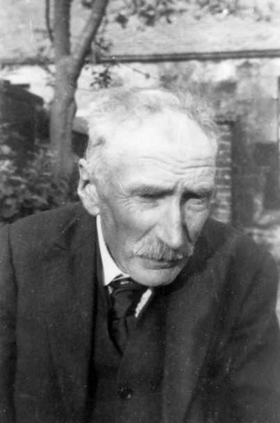
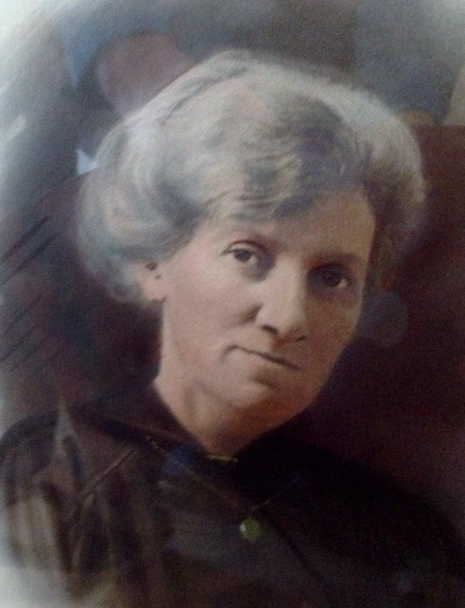

WILLIAM LIDDLE
Born: 11th June 1869 in Whitehill,Dalkeith Parish,Midlothian,Scotland
Died: 27th Nov 1936 in 23 Mayburn Terrace, Loanhead,Midlothian,Scotland
of chronic bronchitis and asthma
Occ: Coal Miner, Restaurateur and Confectioner
Notes
Married: 27th March 1891 in Linden Place, Loanhead, Midlothian.
JANE DRYDEN
Born: 23rd Nov 1872 in Loanhead, Lasswade, Midlothian, Scotland
Died: 29th July 1920 in Mayburn Terrace, Loanhead, Midlothian, Scotland
of bronchial asthma and anaemia
Occ: Paper mill worker
Notes
Children:
Elisabeth(1893)
William(1894)
Agnes Archibald(1903)
George Alexander(1906)
John Cunningham(1906)
Archibald(1914)
[ Liddle Home ]
[ Grant Home ]